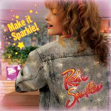
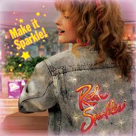
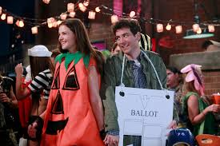
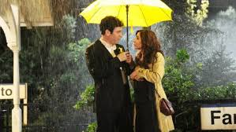
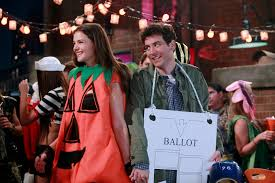
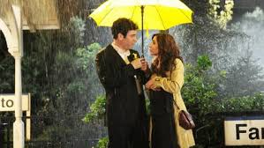

 



Season 1 (2005–2006)
22 episodes — Ted begins his journey to find true love and meets Robin.
Season 2 (2006–2007)
22 episodes — Ted and Robin date, while Marshall and Lily face the beginnings of their marriage.
Season 3 (2007–2008)
20 episodes — After the breakup, Ted tries to move on and Barney unexpectedly gets involved with Robin.
Season 4 (2008–2009)
24 episodes — Ted starts his own company and Barney begins to have feelings for Robin.
Season 5 (2009–2010)
24 episodes — Robin and Barney try to start a relationship, and Ted starts teaching at the university..
Season 6 (2010–2011)
24 episodes — Ted meets Zoey, while Marshall and Lily try to have a baby.
Season 7 (2011–2012)
24 episodes — Robin and Barney get back together, and Lily finally gets pregnant.
Season 8 (2012–2013)
24 episodes — The stories converge: Ted is about to meet “the mother”.
Season 9 (2013–2014)
24 episodes — The final season takes place during Barney and Robin's wedding weekend.